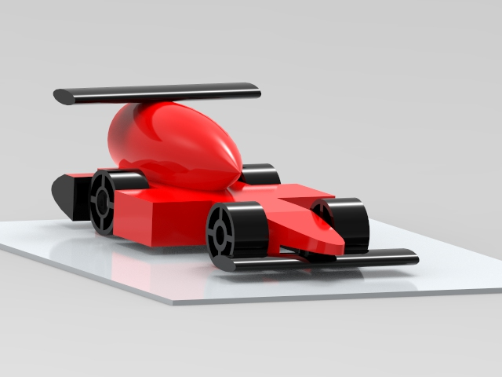
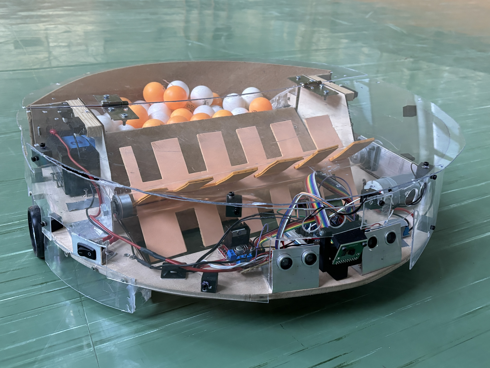
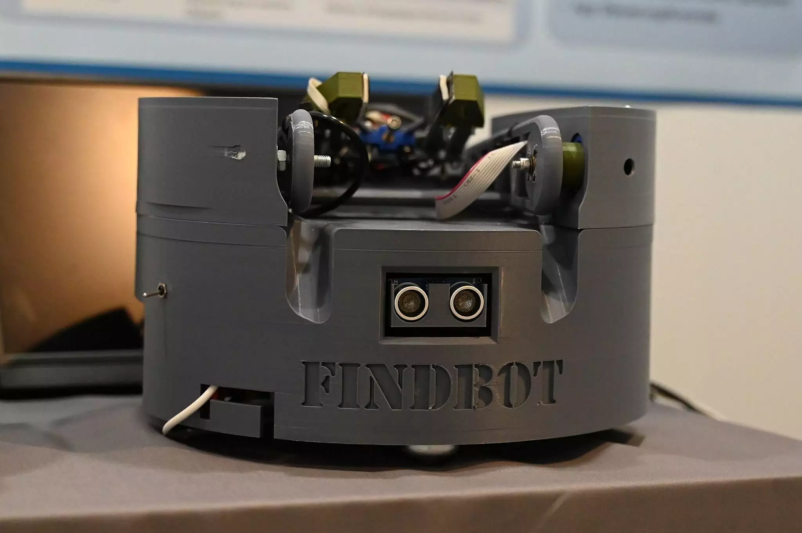

Projects
Project 1 – STEM Racing Car Design
3D Design EngineeringDesigned a racing car using 3D software (Solid Edge), focusing on aerodynamics and structural optimization.

▶ Watch VideoAchievement: 1st place Hamburg STEM Racing, 4th place Germany national level.
Project 2 – TT Robot
Robotics AutomationDesigned a robot that automatically collects table tennis balls.

▶ Watch VideoAchievement: Jugend forscht 2nd place (Hamburg), BWKI Top 10 Germany.
Project 3 – FindBot
AI Robotics Speech ControlRobot that understands voice commands, finds objects, and retrieves them autonomously.

▶ Watch VideoAchievement: Jugend forscht 1st place regional, national special award in robotics.
Project 4 – NOVA Robot
Human-Robot Interaction AI SystemsDesktop robot that recognizes emotions, interacts via dialogue, and performs actions.
 ▶ Watch Video
▶ Watch Video
Achievement: Jugend forscht 3rd place (regional).